地政学
アンマンはイスラエル、パレスチナ、シリア、イラク、サウジアラビアの間で、王政、外交、国際援助、安全保障を調整する首都だ。安定は資源でなく、慎重な仲介と国内均衡で保たれる。今も街に映る。毎日問われる。
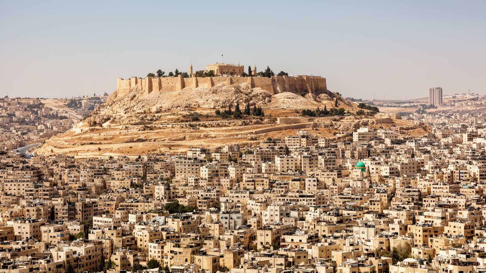
🇯🇴 ヨルダン / 西アジア / World City Atlas
石灰岩の丘に広がるヨルダンの首都。国家機能、難民と移住、水不足、スーク、食文化、宗教、住宅格差が、乾いた谷と幹線道路の上に重なる。
都市の骨格
アンマンはローマ劇場と城塞の谷から、石灰岩の丘へ階段状に広がった都市です。王宮、官庁、国際機関、大学、病院、カフェ、難民の住まいが、車道と坂道で結ばれています。
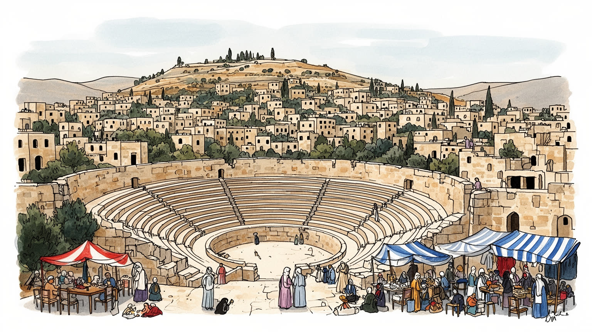
アンマンはイスラエル、パレスチナ、シリア、イラク、サウジアラビアの間で、王政、外交、国際援助、安全保障を調整する首都だ。安定は資源でなく、慎重な仲介と国内均衡で保たれる。今も街に映る。毎日問われる。
行政、医療、教育、通信、IT、観光、物流、小売、国際機関が雇用を作る。若者の失業、女性就労、非正規労働、シリア難民や周辺国出身者の働き方が、都市経済の実力を測る物差しになる。街で続く。暮らしにも響く。
モスクの礼拝、教会、ラマダン、家族の食卓、パレスチナ系住民の記憶、カフェ文化、音楽、大学の若者が重なる。保守的な礼儀と国際都市の開放性が、同じ坂道で調整されている。街の作法でもある。街に残る。今も。
旅行者は城塞、ローマ劇場、ダウンタウン、スーク、カフェを巡るが、住民には水の配給、家賃、渋滞、坂道、学校、医療が日常の条件だ。観光の都市と生活の都市が近く重なる。同じ街路で響く日々。毎日問われる。
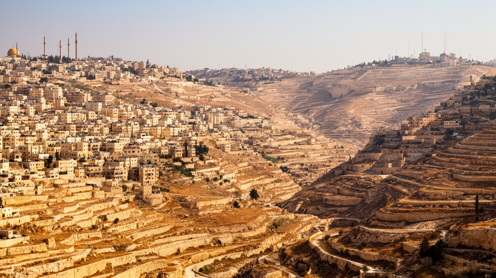
アンマンの都市形態は、石灰岩の丘と乾いたワディによって決まる。古い中心はローマ劇場と城塞を見上げる谷にあり、そこから市街地はジャバル・アンマン、ジャバル・アルウェイブデ、アブドゥーン、スウェイフィーヤ、西部郊外へ、階段状に広がってきた。丘の斜面に同系色の石造住宅が重なるため、遠景では統一感のある白い都市に見えるが、実際には所得、交通、公共サービスの差が地形に沿って刻まれている。坂道は眺望を作る一方で、徒歩、バス、買い物、通学、高齢者の移動を難しくする。車での移動が前提になりやすく、幹線道路とロータリーは都市の時間を強く支配する。降雨は少ないが、短時間に雨が降ると谷の排水と斜面の安全が問題になる。建設は丘を削り、道路を広げ、郊外へ住宅を押し出してきたが、古い中心部には商店、安い食堂、バス、移民の生活が残る。アンマンを読むには、城塞から見る美しい丘の連なりだけでなく、谷底と丘上を結ぶ日々の移動、住宅の質、水と道路の届き方を同じ地図に置く必要がある。地形は観光の背景ではなく、階層、時間、体力、公共投資を配分する都市の骨格なのである。乾いた光が街を均質に見せても、坂の上下には違う生活費と機会がある。夜になると丘の窓明かりは一体の風景になるが、そこへ帰る道の遠さや交通費は家族ごとに違う。今も。
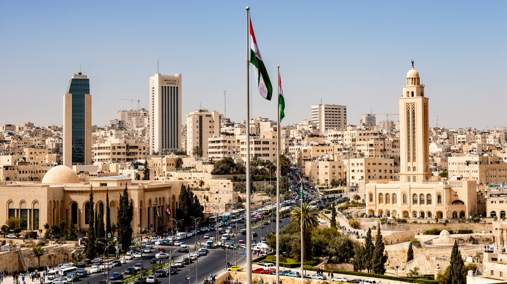
アンマンはヨルダン王国の行政首都であり、王宮、内閣、議会、官庁、大使館、治安機関、国際機関、援助団体が集まる。周辺にはイスラエルとパレスチナ、シリア、イラク、サウジアラビアがあり、都市の政治は常に地域情勢と接続している。資源に乏しい国であるため、国家運営は外交、援助、治安、教育、人材、観光、送金を組み合わせた繊細な調整に依存する。首都の安定は、王政の求心力、部族や都市中間層との関係、パレスチナ系住民の存在、難民受け入れ、公共部門の雇用、物価対策の均衡によって保たれている。アンマンの官庁街や大使館地区は静かに見えるが、そこで扱われる課題は水、国境、安全保障、国際援助、エネルギー、食料、雇用まで広い。デモや政治的不満は、燃料価格、失業、汚職、議会改革、ガザやエルサレムをめぐる感情とも結びつく。首都を読むには、制度の建物だけでなく、カフェの議論、大学生の将来不安、国際機関の事務所、警備された道路、庶民の市場を同時に見る必要がある。アンマンは強大な経済首都ではないが、地域の緊張を国内の秩序へ翻訳し続ける政治都市である。その作業は毎日の行政、交通規制、援助会議、学校、病院の運営として街に表れる。だから首都の安定は抽象的な国家イメージではなく、住民が物価や安全、言論の範囲をどう感じるかに左右される。
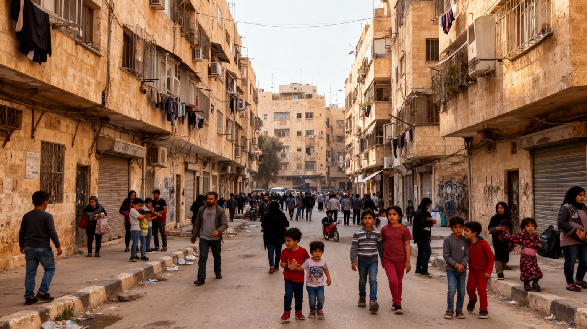
アンマンの近現代史は、移住と避難の歴史でもある。十九世紀末のチェルケス人の再定住から、パレスチナ難民、イラク戦争後の移住者、シリア内戦から逃れた人びとまで、都市は周辺地域の不安定さを何度も受け止めてきた。パレスチナ系住民は商業、教育、政治意識、家族の記憶に深く関わり、シリア人は住宅、飲食、小売、建設、サービス業、学校、援助制度の中で存在感を持つ。避難は一時的な出来事に見えても、長期化すれば家賃、教室、病院、上下水、交通、労働市場へ恒常的な負担と活力をもたらす。国際援助は生活を支えるが、受け入れ側の貧困層との間に不公平感を生むこともある。難民を都市の外に置く物語では、アンマンの実態は見えない。多くの人はキャンプではなく市街地で暮らし、家賃を払い、子どもを学校へ通わせ、仕事を探し、母国の親族と連絡を取りながら生活を作る。移住者の料理、言葉、商い、送金、結婚、教育は街の文化を変える一方、法的地位や就労許可の不安は将来を狭める。アンマンを読むには、難民を数字ではなく、坂道のアパート、市場の店、学校の教室、病院の待合室にいる住民として見る必要がある。都市の寛容さは、危機を一時的にしのぐ力だけでなく、長い滞在を尊厳ある生活へ変えられるかで測られる。受け入れる側の住民もまた、家賃上昇や学校の混雑を抱えるため、都市政策は双方の生活を同時に支えなければならない。
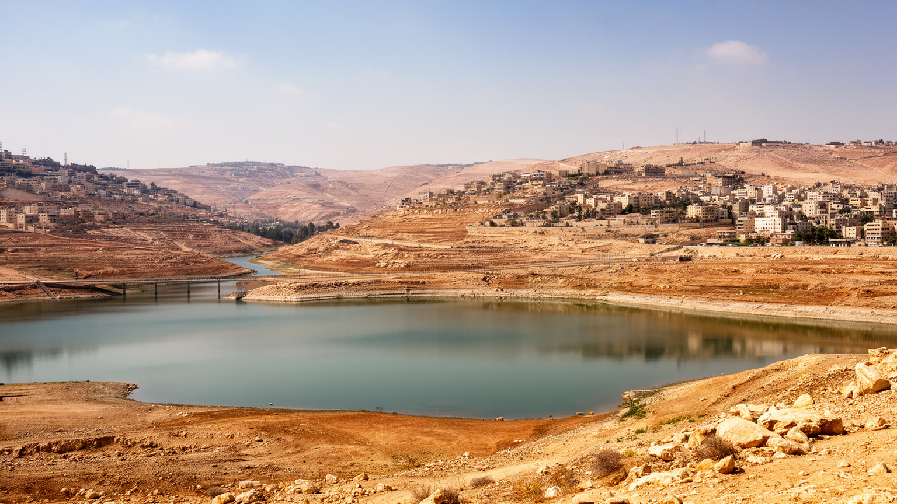
アンマンの日常を決める最も重要な条件の一つは水である。ヨルダンは世界でも水資源が乏しい国の一つで、首都の人口増加、難民の流入、郊外化、気候変動は供給の緊張を高めている。多くの家庭では屋上タンクに水を貯め、地区ごとの配水日に合わせて生活を組み立てる。水は蛇口をひねれば常に出る前提ではなく、家計、建物管理、衛生、学校、病院、飲食業を左右する計画資源である。夏は乾燥して暑く、冬には雨が降るが、その量と時期は安定しない。短い豪雨は谷の洪水や道路冠水を起こし、長い乾燥は庭や公園、農産物価格、都市の暑熱を悪化させる。水不足は全員に関わるが、影響は平等ではない。高所得の住宅は貯水設備や購入水で不足を補いやすく、低所得地区や混雑したアパートでは断水が衛生と時間の負担になる。国家は地下水、ダム、淡水化、隣国との水協力、節水技術を組み合わせようとしているが、人口と需要の増加は速い。アンマンを読むことは、丘の美しい都市景観の背後にある水の物流を読むことでもある。水をどれだけ公平に配り、漏水を減らし、節水型の建物と公共空間を増やせるかが、都市の持続性を左右する。気候適応は環境政策であるだけでなく、貧困と健康を扱う社会政策でもある。屋上タンクや給水車の存在は、首都の近代性が見えにくいインフラ労働に支えられていることを示している。
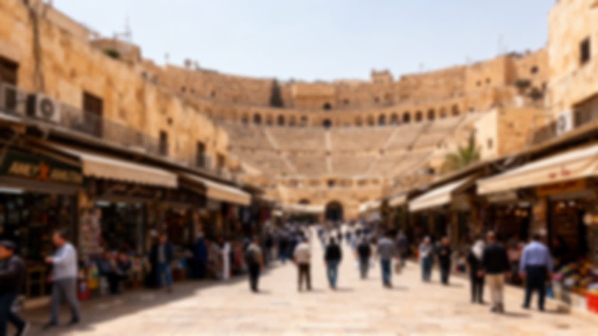
アンマンのダウンタウンは、丘の上の新しい地区とは違う速度で動く。ローマ劇場、城塞へ向かう坂、キング・タラール通り、金物店、衣料品店、香辛料、菓子、古い映画館、安い食堂、バスや乗合タクシーが集まり、谷底の商業都市としての記憶を残す。観光客は古代遺跡とスークを歩くが、住民にとっては日用品、修理、薬、銀行、行政手続き、昼食、古い人間関係の場所である。近年は西アンマンのモールやカフェ、郊外の大型店が消費の中心を分散させ、ダウンタウンの小商いは家賃、駐車、渋滞、観光化、建物老朽化に向き合う。とはいえ、谷底の市場には新しい開発では作りにくい密度がある。客と店主が値段を交渉し、学生や労働者が安い食事を取り、難民や移住者が仕事を探し、巡礼や観光の流れが交じる。ローマ劇場の石段と現代の市場が隣り合うことで、アンマンの時間は一枚の景観に圧縮される。都市を読むには、遺跡を過去として切り離さず、その前で現在の商売と通勤が続いていることを見る必要がある。ダウンタウンが衰えると、低所得者が使える中心の機能も失われる。保存と再生は観光客向けの美化だけでなく、日常の買い物、公共交通、安い食堂、小さな修理店を守る政策でなければならない。谷底の雑多さは、首都が生活都市であり続けるための資産である。夜の明かりと朝の荷下ろしが続く限り、古い中心は単なる遺産ではなく働く場所であり続ける。
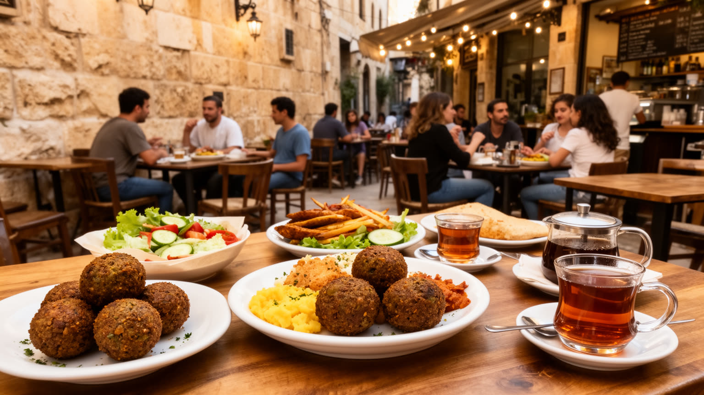
アンマンの食文化は、ヨルダンの地方料理、パレスチナの家庭料理、レバントの街場の味、難民や移住者の記憶を重ねている。朝のフムスとファラフェル、マンサフ、ムタッバル、シャワルマ、甘い菓子、濃いコーヒー、ミントティーは、観光客の楽しみである前に、家族、職場、学生、運転手、店主の日常を支える。食堂は所得差を超えて人を受け入れる場所になりやすく、安い皿は都市の公共性を静かに担う。西アンマンのカフェやレストランは、若者、専門職、外国人、起業家、文化イベントの場となり、女性や学生が比較的自由に集まれる空間も作る。一方で、中心部の古い店や低価格の食堂は、家賃上昇や再開発で押されやすい。食の地図をたどると、アンマンの階層差と地域性が見える。家族の食卓では保守的な礼儀や親族関係が保たれ、カフェでは新しい音楽、語学、恋愛、仕事の話が交わされる。ラマダンには日没後の食事と夜の外出が街の時間を変え、慈善の食事や近所づきあいも強まる。食文化を美味しさだけで語ると、厨房で働く人、配送する人、輸入食材の価格、水と電力の費用を見落とす。アンマンの食卓は、地域の政治不安、移住、物価、若者文化を受け止める社会装置である。茶を囲む短い会話が、都市の緊張を少しずつほどいている。小さな店が残るほど、首都は観光客だけでなく学生や労働者にも居場所を残せる。
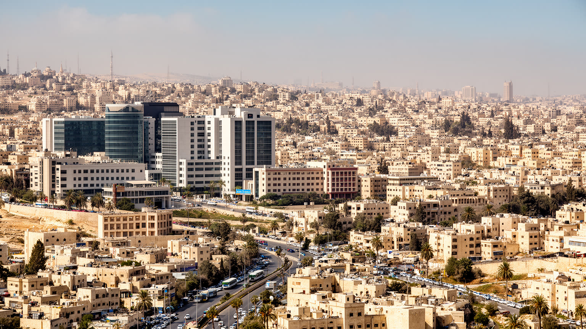
アンマンの経済は、鉱物資源や重工業よりも、行政、医療、教育、金融、通信、IT、観光、物流、国際援助に大きく依存する。ヨルダン全体の官庁と企業本部、大学、病院、国際NGO、開発機関が首都に集まり、周辺国から患者、学生、ビジネス客も来る。医療観光は病院、ホテル、通訳、交通、薬局を動かし、教育は国内外の若者を引き寄せる。ITやスタートアップは英語力と若い人材を生かす可能性を持つが、資金、規模、雇用の安定、女性の参加には課題が残る。観光はペトラや死海へ向かう玄関口としての役割も大きく、アンマン自体の滞在価値を高めることが課題になる。労働市場では若者の失業率が高く、大学を出ても希望する仕事に届かない人が多い。公共部門への期待は強いが、財政には限界があり、民間サービス業の賃金や労働条件は安定しにくい。シリア人やエジプト人など外国人労働者は建設、農業、飲食、小売で重要な役割を担うが、就労許可や賃金をめぐる脆さもある。アンマンの産業を読むには、成長分野の明るさと、教育を受けた若者が実感する停滞を同時に見る必要がある。首都の競争力は、病院や大学の数だけでなく、そこで学び働く人が生活を維持し、家族を持ち、技能を伸ばせるかで測られる。サービス都市の未来は、雇用の質にかかっている。女性が安全に通勤し、若者が起業後も住み続けられる環境を作れるかも、都市経済の厚みを決める。
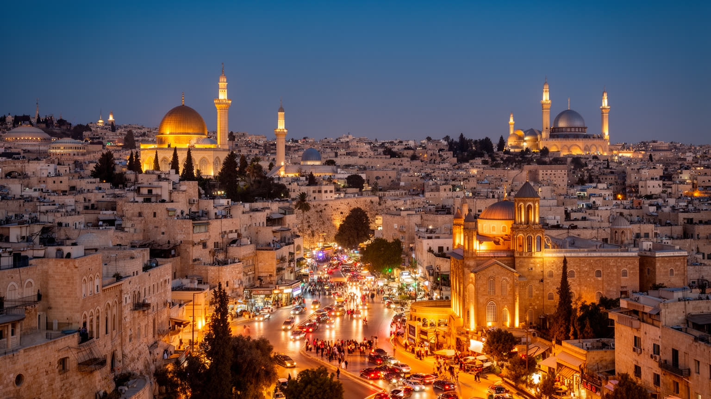
アンマンの日常には、イスラムの礼拝、ラマダン、金曜の集まり、結婚式、葬儀、家族訪問が深く入り込んでいる。モスクは住宅地や商業地の近くにあり、礼拝の呼びかけは都市の時間を区切る。ラマダンには仕事、学校、交通、買い物、夜の食事のリズムが変わり、断食明けの食卓や菓子店の行列が街の表情を変える。ヨルダンは多数派がムスリムだが、アンマンにはキリスト教徒の共同体と教会もあり、学校、医療、慈善、文化に長い役割を持ってきた。パレスチナ系、チェルケス系、アルメニア系、シリア系などの記憶も、儀礼や食卓、家族名、地区の関係に残る。宗教は信仰の問題であると同時に、公共の礼儀、服装、男女の距離、休日、家族の責任を決める社会の言語でもある。若い世代のカフェ文化、音楽、留学経験、SNSは新しい価値観を持ち込むが、家族や近所の期待はなお強い。観光客が都市を歩く時には、遺跡や市場だけでなく、礼拝時間、服装、写真、家庭の境界に配慮する必要がある。アンマンの宗教生活は一枚岩ではなく、保守性、寛容、階層差、世代差を含んでいる。祈りと家族儀礼が都市の速度を落とし、同時に社会的な監視や安心も作る。そこを読むと、首都の日常はより立体的に見える。教会の鐘やモスクの灯りが近くにあることは、少数派の存在を日々の景観として思い出させる。
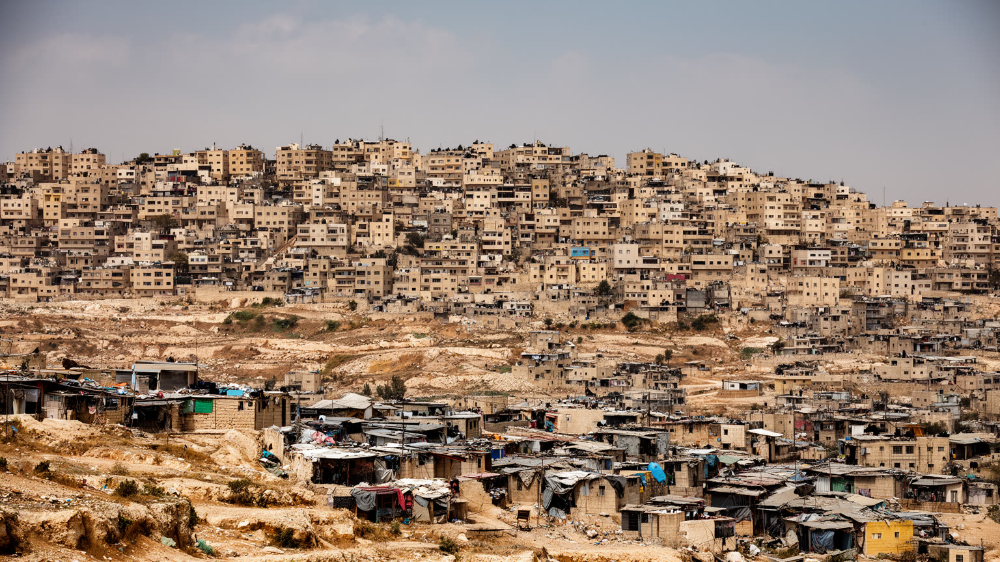
アンマンの住宅地は、同じ石灰岩の色に包まれながら、非常に異なる生活条件を持つ。西部の高所得地区には広い住宅、国際学校、カフェ、モール、大使館、医療施設が集まり、東部や古い中心周辺には低所得のアパート、混雑した通り、小工場、安い商店、移住者の住まいが多い。丘の上の眺望は価値になるが、坂道と車依存は移動の負担にもなる。家賃は難民流入、人口増加、投資、若者の独立需要によって上がりやすく、低所得世帯は狭い部屋や遠い地区へ押される。水の貯蔵、断熱、暖房、冷房、排水、エレベーター、駐車場の質は住宅の安全と健康に直結する。非公式な増築や密集は家族を受け止める柔軟さを持つ一方、火災、地震、雨水、道路幅の問題を抱える。住宅格差は単に家の広さではなく、学校、病院、仕事、公共交通、緑地、治安へどれだけ届くかの差でもある。女性や若者、高齢者、障害のある人にとって、歩けない坂道や遠いバス停は社会参加を狭める。アンマンを読むには、白い建物の統一感に隠れた不平等を見なければならない。都市政策は新しい高級地区の開発だけでなく、古い住宅の修繕、手頃な家賃、日陰の歩道、地域の医療と学校、水の安定供給を扱う必要がある。住まいの質が改善されるほど、首都は危機を受け止める力を増す。住宅の公平さは、難民を受け入れ続ける都市の信頼にも直結している。
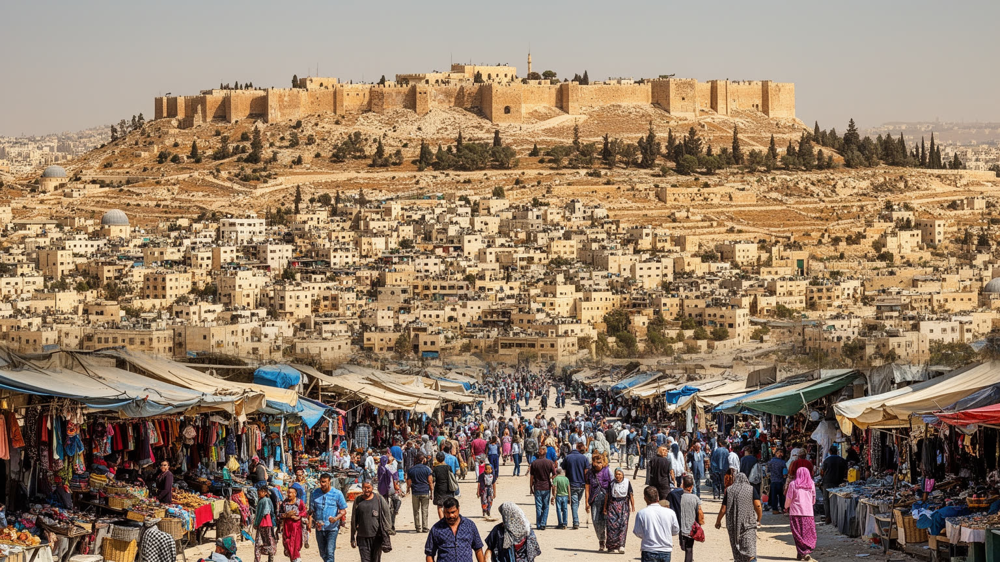
アンマンを世界都市として読む価値は、巨大な金融力や港湾ではなく、地域の不安定さを受け止めながら首都の日常を保っている点にある。石灰岩の丘、ローマ劇場、城塞、王政の官庁、大使館、国際機関、病院、大学、スーク、カフェ、難民のアパート、水のタンクは、別々の風景ではなく一つの都市装置である。ヨルダンは資源に乏しいが、外交、教育、医療、人材、観光、援助、治安の均衡で国を動かしてきた。その中心にあるアンマンでは、周辺国の戦争や占領、ガザやシリアをめぐる感情、パレスチナ系住民の記憶、若者の失業、水不足が生活の細部へ入り込む。観光客は城塞から丘の街を眺め、ダウンタウンで食事をするだけでも魅力を感じられるが、都市の本質はその景色の裏にある調整力にある。誰が水を確保できるか、誰が家賃を払い続けられるか、誰が就労許可を得られるか、誰が公共交通で学校や病院へ届くかが、首都の安定を左右する。アンマンは完成された美しい古都ではなく、移動してきた人びとと古くからの住民が、限られた水と雇用の中で都市を作り直す場所である。丘の上下を結ぶ道路、市場の会話、夕方の礼拝、カフェの若者、屋上のタンクを重ねて見ると、乾いた首都が持つ強さと脆さが同時に見えてくる。この都市の重要性は、危機を劇的に解決する力ではなく、危機を日常生活の中で管理し続ける粘り強さにある。